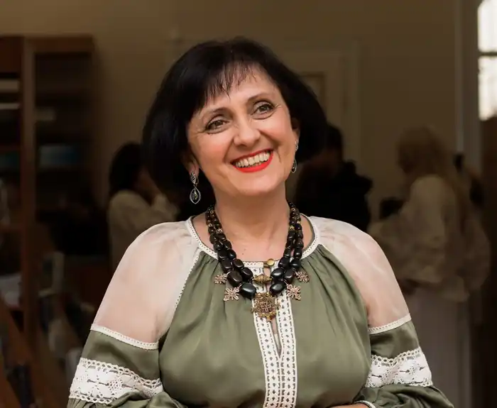
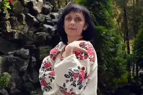
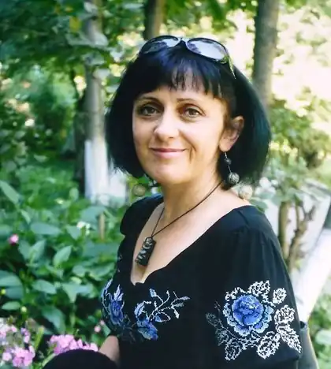

Дара Корній (справжнє ім'я — Мирослава Іванівна Замойська) — українська письменниця, яка працює в жанрі фентезі. Народилася 20 вересня 1970 року у селі Секунь Старовижівського району Волинської області. Середню школу закінчила у селі Княжі Сокальського району Львівської області. Вищу освіту здобула на журналістсько-редакторському відділенні Українського поліграфічного інституту у Львові (нині Українська академія друкарства).
Перший роман письменниці у жанрі фентезі — "Гоніхмарник" — було опубліковано у видавництві "Клуб Сімейного Дозвілля" у 2010 році. Книга принесла автору третю премію літературного конкурсу "Коронація слова" 2010 року в номінації "роман", була нагороджена нагородою "Дебют року" від видання "Друг читача" та стала лауреатом премії асамблеї фантастики "ПОРТАЛ-2011" — "Відкриття собі" імені Володимира Савченко. Після публікації першого роману Дара Корней здобула неофіційне звання "української Стефані Майєр".
"Моя дочка зачитувалась вампірськими сагами Майєр і щоразу з натхненням переказувала мені їхні сюжети, — зізнається Дара Корній. — Мене злило те, що українські підлітки захоплюються чужою міфологією, не здогадуючись навіть, наскільки потужним є пласт рідної української міфології. "Гоніхмарником" прагнула довести, що рідна міфологія нічим не гірша, а навіть краща за іноземну". Другий твір письменниці – роман "Тому, що ти є" – став "Вибором видавця" у конкурсі "Коронація слова – 2011". Роман "Зворотній бік світла" — "Вибір видавців" 2012 року. Перу письменниці також належать книги "Зірка для тебе" (2013), "Зворотній бік темряви" (2013), "Зозулята зими" (у співавторстві з Талою Владміровою) (2014), "Щоденник мавки" (2014), "Крила кольору хмар" "(у співавторстві з Талою Владміровою) (2015), "Петрусь-хімородник" (2015), "Зворотній бік сутіні" (2016), "Зворотній бік світів" (2016). Дара Корній живе у Львові. Виховує старшу доньку Ірину та молодшого сина Максима, яких вважає найважливішим та головним досягненням у житті. Працює у Львівській національній академії мистецтв. Захоплюється дохристиянською міфологією, праукраїнськими віруваннями, етнографією, казками, народною музикою, книгами.